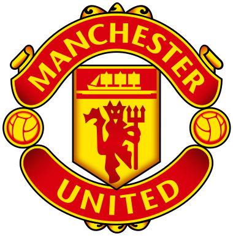
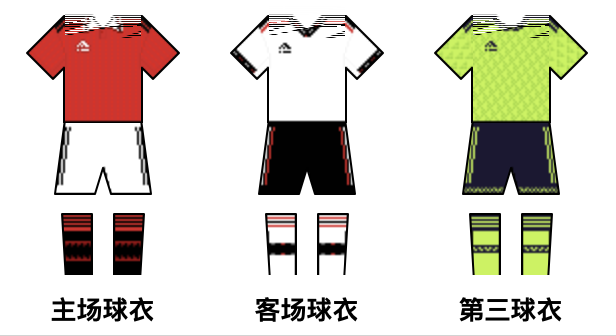
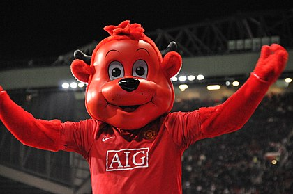
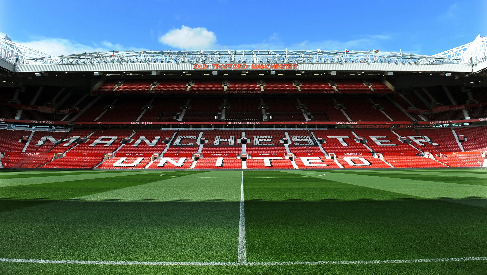

Manchester United Brief Profile
1. Team culture
1.1 Team emblem

1.2 Team uniform

1.3 Team mascot

2. Basic Profile
Full name: Manchester United Football Club
Short name: MUN or Man Utd
Loaction: Manchester England
Stadium: Old Trafford

2. Staff
2.1 Coaches
- ERIK TEN HAG
- BENNI MCCARTHY
- STEVE MCCLAREN
- MITCHELL VAN DER GAAG
2.2 Others
- RICHARD ARNOLD
- ALAN DAWSON
- D.FLETCHER
- JOHN MURTOUGH
3. Players
3.1 Goalkeeper
- 1 DAVID DE GEA
- 22 TOM HEATON
- 26 DEAN HENDERSON
- 31 JACK BUTLAND
3.2 Defender
- 2 VICTOR LINDELOF
- 3 ERIC BAILLY
- 4 PHIL JONES
- 5 HARRY MAGUIRE
- 6 LISANDRO MARTINEZ
- 12 TYRELL MALACIA
- 19 RAPHAEL VARANE
- 20 DIOGO DALOT
- 23 LUKE SHAW
- 27 ALEX TELLES
- 29 ARRON WAN-BISSAKA
- 33 BRANDON WILLIAMS
- 38 AXEL TUANZEBE
- 43 TEDEN MENGI
- 74 ALVARO FERNANDEZ
3.3 Midfielder
- 8 BRUNO FERNANDES
- 14 CHRISTIAN ERIKSEN
- 15 MARCEL SABITZER
- 16 AMAD
- 17 FRED
- 18 CASEMIRO
- 28 FACUNDO PELLISTRI
- 34 DONNY VAN DE BEEK
- 39 SCOTT MCTOMINAY
- 46 HANNIBAL
- 55 ZIDANE IQBAL
- 73 KOBBIE MAINOO
3.4 Forwards
- 9 ANTHONY MARTIAL
- 10 MARCUS RASHFORD
11 MASON GREENWOOD - 21 ANTONY
- 25 JADON SANCHO
- 27 WOUT WEGHORST
- 36 ANTHONY ELANGA
- 47 SHOLA SHORETIRE
- 49 ALEJANDRO GARNACHO
4. History
4.1 Foundation
Foundation Year: 1878
Predecessor: Newton Heath LYR F.C.
4.2 Trophy Room
Trophies
| |
PREMIER LEAGUE |
FA CUP |
LEAGUE CUP |
First Division Championships |
COMMUNITY SHIELD |
EUROPEAN CUP |
UEFA EUROPA LEAGUE |
UEFA CUP WINNERS' CUP |
UEFA SUPER CUP |
INTERNATIONAL CUP |
FIFA CLUB WORLD CUP |
| QUANTITY |
13 |
12 |
6 |
2 |
21 |
3 |
1 |
1 |
1 |
1 |
1 |
Manchester United are one of the most successful clubs in world football, with a glittering history of success on the field.
5. Official Website
Visit Man Utd
Visit Man Utd in a new window
6. Short Video Introduction
The Rise of the Manchester United Dynasty